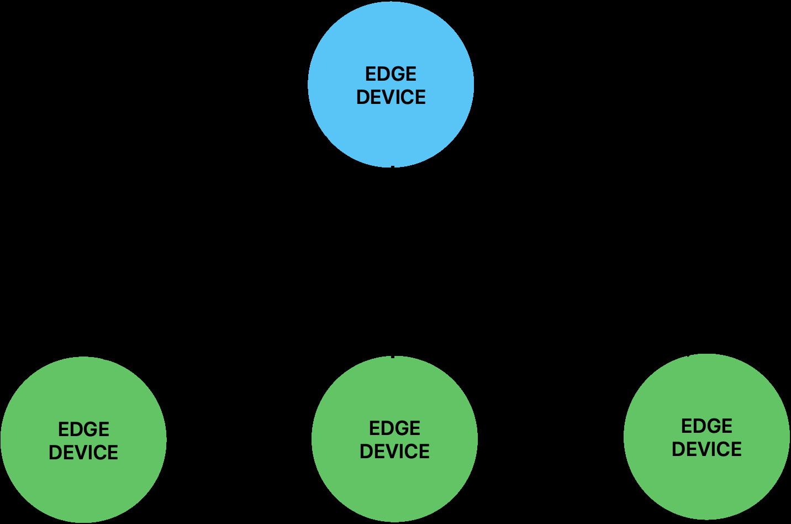

Herausforderung & Problemstellung
Die zunehmende Digitalisierung industrieller Produktionsprozesse generiert stetig wachsende Datenvolumina. Zentrale Cloud-basierte Architekturen stoßen hierbei zunehmend an ihre Grenzen hinsichtlich Latenz, Bandbreite und Ausfallsicherheit, insbesondere in kritischen Produktionsumgebungen.
Lösungsansatz
Diese Arbeit untersucht, inwieweit sich containerbasierte Edge-Computing-Architekturen zur Lösung dieser Probleme integrieren lassen. Im Zentrum der Evaluierung standen Container-Laufzeitumgebungen (Docker, Podman) sowie Orchestrierungslösungen (Kubernetes, K3s, Docker Swarm). Dabei wurden technische Anforderungen wie Sicherheit (z.B. Rootless-Betrieb), Skalierbarkeit und Ressourceneffizienz systematisch analysiert und durch explorative Prototyping-Versuche verifiziert.
Ergebnis & Mehrwert
Das Ergebnis ist ein strukturiertes Architekturkonzept, das konkrete Best Practices aufzeigt. Es verdeutlicht, dass leichtgewichtige Varianten (wie K3s) oder daemonlose Umgebungen (wie Podman) oft praxistauglicher für Edge-Devices sind als reine Cloud-Tools. Dies ermöglicht es Unternehmen, Daten lokal zu verarbeiten, Latenzen zu minimieren und die Ausfallsicherheit maßgeblich zu erhöhen.

Ergebnisse & Best Practices
Die Analyse verdeutlicht, dass keine einzelne Technologie universell für alle Edge-Szenarien geeignet ist. Die Wahl hängt stark vom Einsatzzweck, der Hardwareausstattung und den Sicherheitsanforderungen ab.
- Docker & Docker Swarm: Gelten als Standardlösungen, sind einfach aufzusetzen, weisen aber bei sehr großen Clustern oder stark limitierten Ressourcen Nachteile durch den Daemon-Overhead auf.
- Podman: Bietet durch seinen nativen daemonlosen und "Rootless"-Betrieb entscheidende Sicherheitsvorteile in exponierten Industrieanlagen.
- Kubernetes vs. K3s: Während Kubernetes für leistungsstarke, komplexe Großcluster optimal ist, erwies sich die leichtgewichtige Variante K3s als wesentlich ressourcenschonender und praxistauglicher für typische Edge-Devices.
Auf Basis der Erkenntnisse wurden konkrete Best Practices abgeleitet, darunter die Nutzung von Minimal-Images, rollierenden Updates und strikten Network Policies zur Absicherung von IIoT-Netzwerken.
Zurück zu den Projekten